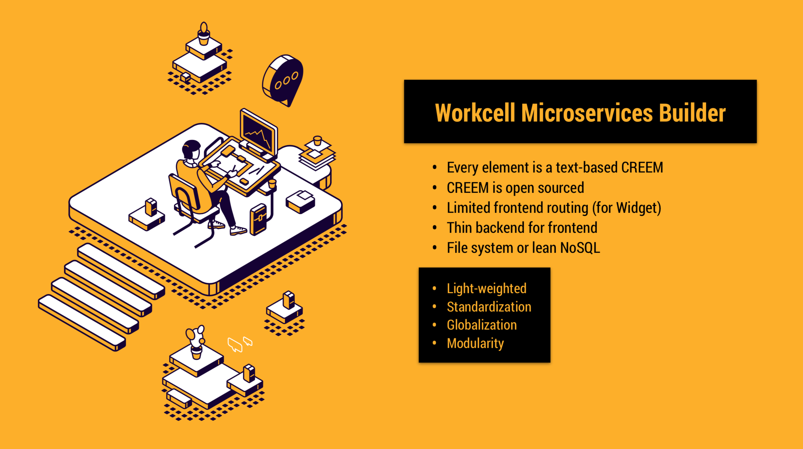

Introduction of WMB OT Low-Code

The core operating engine of the Workcell Microservices Builder (WMB) is the OT Low-code Engineering Paradigm. It’s an innovated and light-weighted web-based app that can be deployed on promise (into an edge device or a local server) or on cloud (public cloud like AWS / Azure or private cloud like OpenStack). The intuitive engineering paradigm of it is FBTD (Funtion Block Typed Diagram) sourced from an improved and simplified version of IEC61499 based on CREEM that is compatible with Behavior Tree and OPC UA information model.